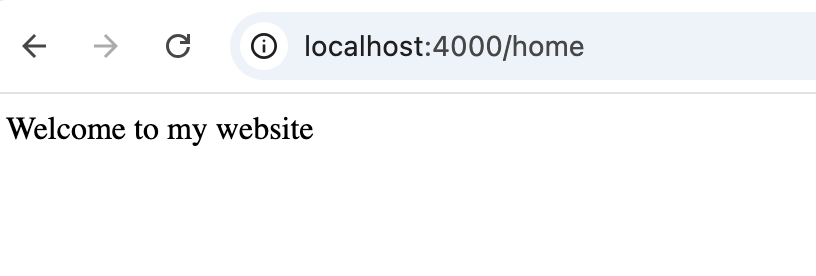
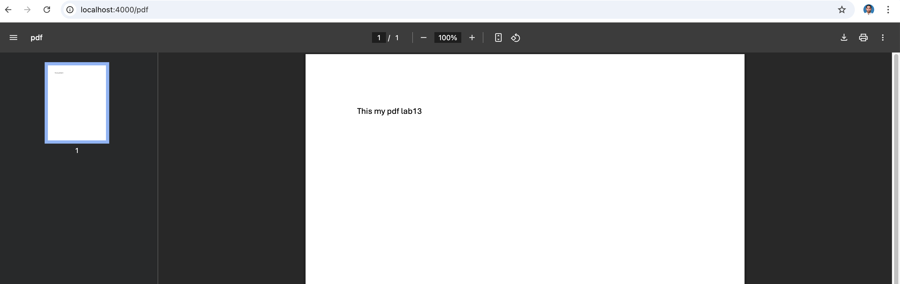
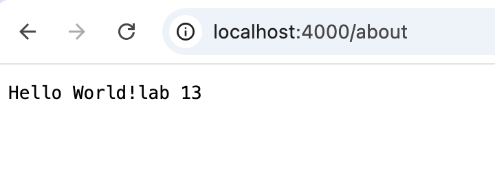

Exercise 1: convert Lab13 Question2 to the Express application.
- If the path is ‘/image’ and method is GET, send a response of an image to any client. Set an appropriate content-type for your image.
- If the path is ‘/pdf’ and method is GET, send a response of a pdf file to any client. Set a Content-type as "application/pdf".
- If the path is ‘/about’ and method is GET, send a response of a txt file to any client. Set a Content-type as "text/plain".
- If the path is ‘/home’ or ‘/’ and method is GET, send “Welcome to my website” text.
- Otherwise return not found with status code 404.
The solution is at the server.js file
import express from 'express';
import path from 'path';
import url from 'url';
const app = express();
app.set('port', process.env.PORT || 3001);
const port = app.get('port');
app.use(express.static('./public'))
const __filename = url.fileURLToPath(import.meta.url);
const __dirname = path.dirname(__filename);
app.get(['/','/home'],(req, res, next) =>{
res.send('Welcome to my website');
});
app.get('/about',(req,res,next)=>{
res.send('Hello World! about lab 13');
});
app.get('/image',(req, res, next) =>{
res.sendFile(path.join(__dirname, 'public/img', 'headeset.jpg'));
});
app.get('/pdf',(req, res, next) =>{
res.sendFile(path.join(__dirname, 'public/files', 'lab13.pdf'));
});
app.use((req,res,next) =>{
next("handling error");
})
app.use((err,req,res,next)=>{
res.status(500).json({ message: "Server Internal error" });
});
app.listen(port, () => {
console.log('Your Server is running on ',port);
});
Calling default / or /home
Calling /image
Calling /pdf
Calling /about
Calling /404 page
Exercise 2: Write an Express application to provide a calculator API.
The methods fs.readFileSync(), fs.readFile(), fs.promises.readFile(), and fs.createReadStream() are all used to read files in Node.js, but they differ in synchronous vs. asynchronous behavior, streaming vs. whole file reads, and API style.
- There should be an API endpoint for each basic math operation: addition, subtraction, multiplication, division, and modulus.
- Each endpoint will receive the input numbers and return a JSON response with the results as follows: { results: 0 }. Use the EchoAPI vscode extension or Postman to test your API endpoints.
- The calculator router should be designed with flexibility to receive the input numbers as query parameters, parameters, or in the body as JSON or urlEncoded format, For example, all these requests will return the same results value { results: 5 }:
- GET /addition/2/3
- GET /addition/?a=2&b=3
- POST /addition/ BODY ?a=2&b=3
- POST /addition/ BODY {a:2,b:3}
import express from 'express';
const app = express();
app.set('port', process.env.PORT || 3001);
const port = app.get('port');
app.use(express.json());
const convertToNumber = (req) => {
let a = req.params.a || req.query.a || req.body.a;
let b = req.params.b || req.query.b || req.body.b;
return { a: parseFloat(a), b : parseFloat(b)}
}
app.get(['/addition/:a/:b/','/addition'],(req,res,next) => {
const {a,b} = convertToNumber(req);
res.json({result: parseFloat(a) + parseFloat(b)})
});
app.post('/addition',(req,res,next) =>{
const {a,b} = convertToNumber(req);
res.json({result: parseFloat(a) + parseFloat(b)});
})
app.get(['/subtraction/:a/:b/','/subtraction'],(req,res,next) => {
const {a,b} = convertToNumber(req);
res.json({result: parseFloat(a) - parseFloat(b)})
});
app.post('/subtraction',(req,res,next) =>{
const {a,b} = convertToNumber(req);
res.json({result: parseFloat(a) - parseFloat(b)});
})
app.get(['/multiplication/:a/:b/','/multiplication'],(req,res,next) => {
const {a,b} = convertToNumber(req);
res.json({result: parseFloat(a) * parseFloat(b)})
});
app.post('/multiplication',(req,res,next) =>{
const {a,b} = convertToNumber(req);
res.json({result: parseFloat(a) * parseFloat(b)});
})
app.get(['/division/:a/:b/','/division'],(req,res,next) => {
const {a,b} = convertToNumber(req);
res.json({result: parseFloat(a) / parseFloat(b)})
});
app.post('/division',(req,res,next) =>{
const {a,b} = convertToNumber(req);
res.json({result: parseFloat(a) / parseFloat(b)});
})
app.get(['/modulus/:a/:b/','/modulus'],(req,res,next) => {
const {a,b} = convertToNumber(req);
res.json({result: parseFloat(a) % parseFloat(b)})
});
app.post('/modulus',(req,res,next) =>{
const {a,b} = convertToNumber(req);
res.json({result: parseFloat(a) % parseFloat(b)});
})
app.listen(port,() =>{
console.log(`Express running on port ${port}`)
})
Solution:
Addition return { "result: 5"}
GET: localhost:3001/addition/2/3
GET: localhost:3001/addition/?a=2&b=3
POST: localhost:3001/addition/?a=2&b=3
POST: localhost:3001/addition, body {a:2, b:3}
subtraction return { "result: -1"}
GET: localhost:3001/subtraction/2/3
GET: localhost:3001/subtraction/?a=2&b=3
POST: localhost:3001/subtraction/?a=2&b=3
POST: localhost:3001/subtraction, body {a:2, b:3}
multiplication return { "result: 6"}
GET: localhost:3001/multiplication/2/3
GET: localhost:3001/multiplication/?a=2&b=3
POST: localhost:3001/multiplication/?a=2&b=3
POST: localhost:3001/multiplication, body {a:2, b:3}
division return { "result: 0.6666666666666666"}
GET: localhost:3001/division/2/3
GET: localhost:3001/division/?a=2&b=3
POST: localhost:3001/division/?a=2&b=3
POST: localhost:3001/division, body {a:2, b:3}
modulus return { "result: 2"}
GET: localhost:3001/modulus/2/3
GET: localhost:3001/modulus/?a=2&b=3
POST: localhost:3001/modulus/?a=2&b=3
POST: localhost:3001/modulus, body {a:2, b:3}